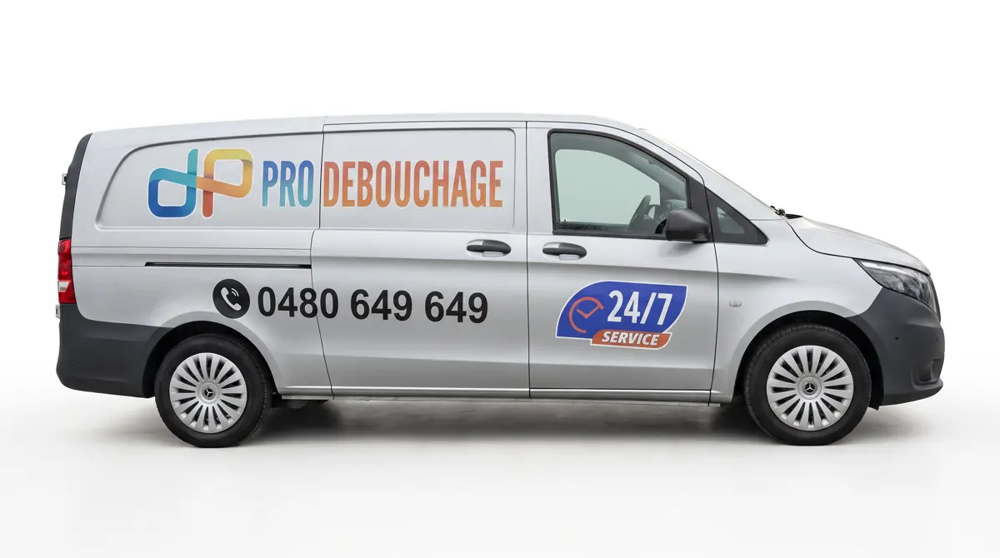

Qui vient chez vous

On regarde d'abord à la caméra. Casser est le dernier recours, et jamais sans votre accord. C'est pour cela qu'elle est comprise.
Après l'inspection caméra, nous rédigeons un rapport que vous pouvez remettre à votre assurance, par exemple après un dégât des eaux.
Virement, lien de paiement, ou liquide avec un reçu TVA remis sur place. Jamais de montant inventé à la porte.